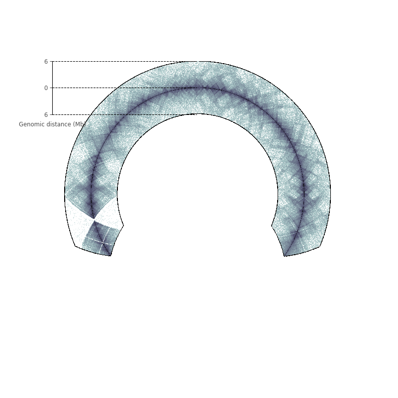

Note
Click here to download the full example code or to run this example in your browser via Binder
Plotting linear chromosomes¶
Out:
<matplotlib.axes._subplots.AxesSubplot object at 0x7f258f865518>
from circhic import datasets, CircHiCFigure
data = datasets.load_kbm7()
counts = data["counts"]
nbins = data["nbins"]
circfig = CircHiCFigure(lengths=nbins, chromosome_type="linear")
circfig.plot_hic(counts, inner_gdis=80, outer_gdis=80, cmap="bone_r",
inner_radius=0.5)
circfig.plot_raxis()
Total running time of the script: ( 0 minutes 6.715 seconds)